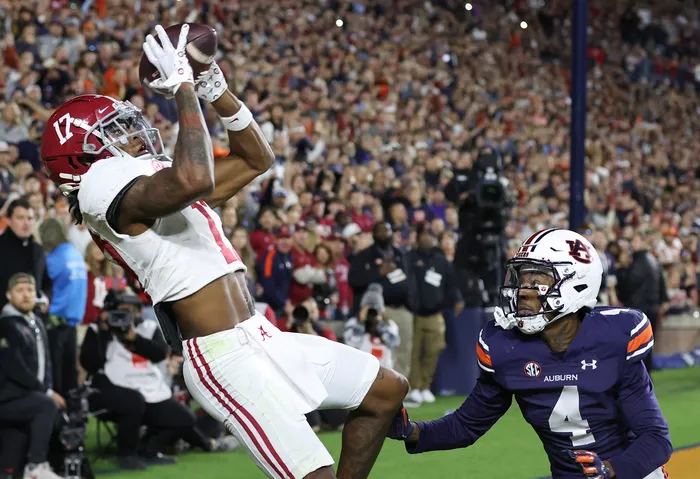
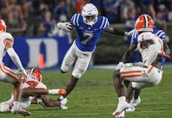
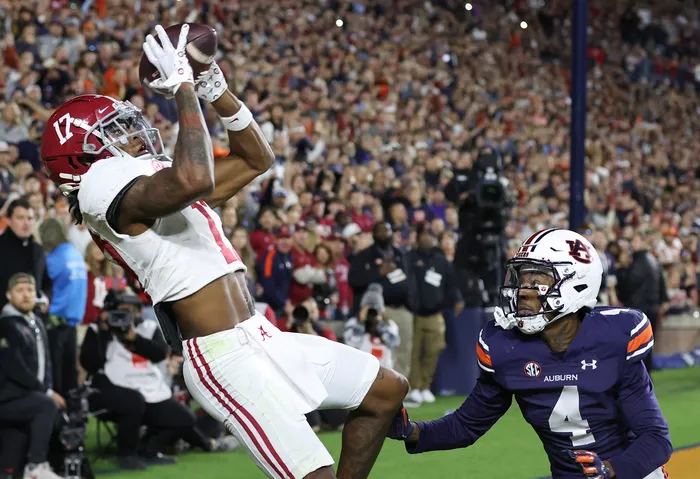
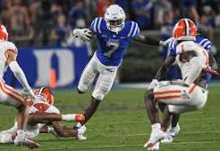

Signing day 2024 updates: Commits, rumors, top classes and highlights
College football's signing day is here to close out the 2024 recruiting cycle. Wide receiver Ashton Bethel-Roman, the No...

CBS Sports - 7 hours ago
College football recruiting rankings 2024: Top classes emerge during National Signing Day
With the majority of the heavy lifting for the 2024 college football recruiting cycle being done during the early signing period in December...
Fox Sports - 1 hour ago
National Signing Day 2024 Tracker: Ryan Williams signs with Alabama; Terry Bussey to A&M
The February version of college football signing day is underway. Follow along as we find out where the top players still on the board end...
USA Today - 21 minutes ago
Ohio State, LSU headline the winners and losers from college football signing day
The second and final signing day of the college football recruiting cycle had stories of success and disappointment.